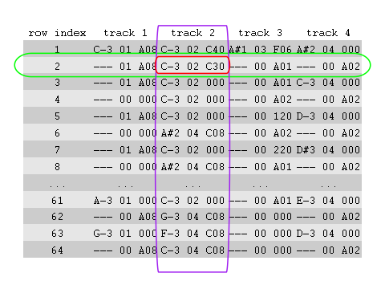

The PTPattern (or simply pattern) is a table that determines which
samples are played at which notes in which octave, in which order and with
which effects.
Details
When a PTPattern table (or simply pattern) is played, each of the 64
rows (see the green mark in the illustration below for an example of a row)
are played subsequently at a specified speed/tempo.
Note that ProTracker uses row indices that start at zero. However, this package uses indices starting at one, conform R language definitions.

The table has four columns (see the purple outline in the illustration
above as an example of a column), representing the four audio channels (PTTrack)
of the Commodore Amiga. Samples listed in the same row at different
tracks will be played simultaneously.
An element at a specific row and track will be referred to as a PTCell
(or simply cell). The cell determines which sample needs to be played at
which note and octave and what kind of effect or trigger should
be applied.
With the PTPattern-method, objects can be coerced to a pattern
table. This method can also be used to extract or replace patterns in
PTModule objects.
Slots
dataA
matrix(64 rows, 16 columns) of classraw. Each row contains therawconcatenated data of 4PTCellobjects, representing each of the 4 audio channels/tracks (as eachPTCellobject holds 4rawvalues, each row holds 4 x 4 = 16rawvalues). Therawdata is formatted conform the specifications given in thePTCelldocumentation.
See also
Other pattern.operations:
MODPlugToPTPattern(),
PTPattern-method,
PTPatternToMODPlug(),
appendPattern(),
deletePattern(),
pasteBlock(),
patternLength(),
patternOrderLength(),
patternOrder()